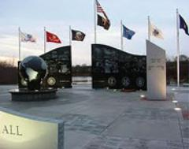
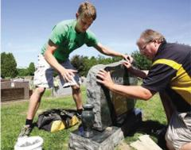
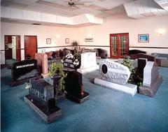

Our story
About Brannon Monument Co.
As families have trusted us, we have tried to give back to the communities that have been good to us. In addition to the countless organizations we have shared with financially, we have also been generous with our time, serving organizations such as the following:
- Rotary International
- Dubuque Area Chamber of Commerce
- Dubuque Community School District
- Dubuque Symphony Orchestra
- Dubuque Humane Society
- Grand Opera House
- Dubuque Ambassadors
- Five Flags Civic Center
- Mercy Service Club
- Visiting Nurses Association
- Junior Achievement
- Stonehill Care Center
- Alzheimer’s Association
- Boys and Girls Club
- St. Joseph’s Church
- Rising Star Theatre Company
- Oldorf Hospice House
- Dubuque Arboretum and Botanical Gardens
- and many others
Brannon Monument Co. was founded in 1926 in Dubuque, Iowa, by Henry Kies. Originally called Kies Monument, Vince & Mary Lou Brannon purchased the business in 1961 and changed the name to Brannon Monument. Their son Michael joined the family business in 1991. Mike purchased the business in 1993 and his wife, Stasia, joined him in the business later that year. We have been faithfully serving families for over 89 years. A move to a larger location in 1996 allowed us to better serve families. With an impressive location and a talented staff, we are large enough to serve you, yet still small enough to make every monument special.


Brannon Monument Company proudly offers:
- A convenient location with a large, comfortable showroom and off-street parking.
- Free customized computer layout and design of your monument - which you approve before production begins.
- Certified Memorialists recognized as expert career professionals
- Over 88 years of friendly, helpful, attentive service and expertise.
- An extensive display, both indoor and outdoor.
- On-site production of your memorial.
- A warranty covering the entire project.
- The widest variety of quality granites available.
- Member of Monument Builders of North America.
- Knowledge of area cemetery’s rules and regulations.
- Artistic custom designs and etchings.
When you purchase a monument from a member of Monument Builders of North America (MBNA) like us, you are assured of ethical, honest business practices from someone who is committed to their industry and art. Selecting a memorial is an important, personal choice - a choice best made with the assistance of a caring, knowledgeable professional. As you may only purchase a memorial once in your lifetime, we encourage you to trust experts like us at Brannon Monument Co. As a full-service, family owned business, we are proud of our record of personalized service and quality memorials.
Brannon Monument's expertise is evident in the fact they have a Certified Memorialists on staff, the highest personal designation in the monument industry. Brannon Monument has attained the designation of CM from the national association, Monument Builders of North America. Combining service to the industry and community, continuing educational points, and passing an extensive exam have confirmed their commitment to the memorial industry and to the families they serve.
In addition to local service, our professional service has added to our experience and expertise. Mike has been President of the Monument Builders of Iowa, and in 1999-2000, was the youngest President ever of the national organization, Monument Builders of North America. Their philosophy of service extends from their service to families and worthwhile organizations as part of the Paradox of Life, whereas the more you give, the more you get.